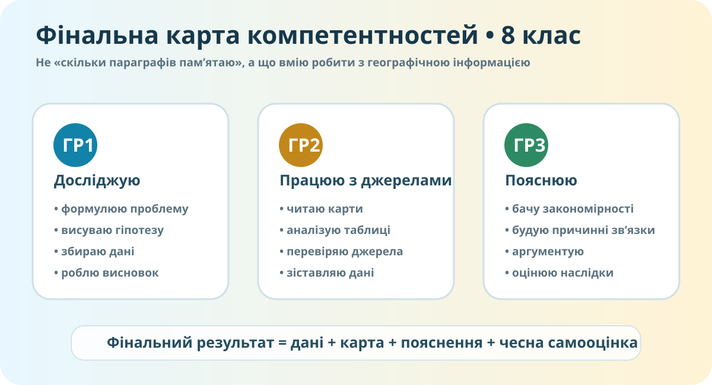

Перед стартом
Формат: 3 блоки компетентностей + інтегрований кейс + рефлексія.
Максимум: 10 балів. Автотест дає 6 балів, інтегрований кейс і самооцінювання — ще 4 за рубрикою.
Це діагностична робота, тому підказки мінімальні, а теорія не дублюється.
0. Ідентифікація
1. Локальна проблема
У громаді протягом кількох років частіше трапляються літні хвилі спеки, малі річки міліють, а після сильних злив вода довше затримується на забудованих ділянках.
2. Виберіть сильні джерела
Для перевірки локального кліматично-водного ризику оберіть два найкорисніші джерела:
Можете використати OpenStreetMap або Windy як додаткові просторові джерела.
3. Причинний ланцюг
Побудуйте короткий ланцюг із 4 кроків:
Окремо вкажіть, де у Вашому поясненні є невизначеність.
4. Автотест • 6 балів
5. Інтегрований кейс • 3 бали
Ситуація: громада обирає між трьома рішеннями: А — розширити забудову заплави; Б — відновити прибережну рослинність і водоутримувальні ділянки; В — спрямувати весь бюджет лише на нові дороги.
є чіткий вибір і релевантний доказ
два докази + причинне пояснення
докази + причинний зв’язок + обмеження/компроміс
6. Самооцінювання • 1 бал
Оцініть себе за кожною групою результатів від 1 до 5.
Після діагностування
За КТП домашнє завдання — опрацювати індивідуальні рекомендації та завершити самооцінювання. Електронний підручник / матеріали: Всеукраїнська школа онлайн.